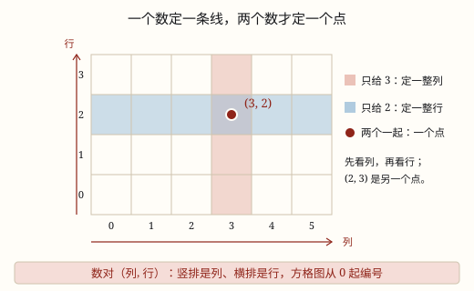

用数对确定位置
用两个有顺序的数（先列后行）在方格图上锁定一个点：一个数只能定一条线，两个数才能定一个点。
| 所属主题 | 图形与位置 |
|---|---|
| 所属模块 | 图形与几何 |
| 课标学段 | 第三学段（5~6年级） |
| 前置知识 | 平移和旋转 |
| 核心素养 | 空间观念几何直观符号意识 |
课标要求
| 图形与几何·图形的位置与运动 | 能用有序数对（限于自然数）表示点的位置，理解有序数对与方格纸上点的对应关系（例36）。 印刷第 33 页 行为动词：理解 |
|---|---|
| 图形与几何·图形的位置与运动 | 能根据参照点的方向和距离确定物体的位置；会在实际情境中，描述简单的路线图（例35）。 印刷第 33 页 行为动词：掌握 |
说明
在教室里找一个人，如果只说「第 3 列」，竖着那一排的人都会站起来；只说「第 2 行」，横着那一排的人都会站起来；只有说「第 3 列第 2 行」，站起来的才只有一个人。要两个数，才能确定一个位置。
先说清楚两个词：竖排叫列，横排叫行。人教版方格图有一个约定——列和行都从 0 开始编号，最左边那条竖线是第 0 列，最下面那条横线是第 0 行，交点就是 (0, 0)。教室里数座位时通常从 1 开始，说「第一列、第一行」；同一张图里，起数标准要统一，不能一半从 0 数、一半从 1 数。
把列数和行数按顺序写进小括号，中间用逗号隔开，就叫数对，记作 (\text列, \text行)。(3, 2) 读作「数对三二」，意思是第 3 列第 2 行。先写列，后写行，这个顺序不能换：(3, 2) 和 (2, 3) 是两个完全不同的位置。
为什么偏偏要两个数？因为一个数只能管一个方向。第 3 列是一整条竖线，上面的点行数各不相同；第 2 行是一整条横线，上面的点列数各不相同。一个数只能确定一条线，两个数相交，才确定一个点。
使用场景
教室座位表：新学期排座位，老师说「第 4 列第 3 行」，比「你坐小明后面那个」清楚得多。
电影院选座：电影票上印着「6 排 9 号」，这就是一对有顺序的数，进场对着排和号一走就到。
班级图书角：书架分成几列几层，说「第 2 列第 4 层」，一本书的位置就定死了，不用翻半天。
方格纸和棋盘：围棋盘、五子棋盘、地图上的方格编号，都是用两个方向的信息定位，和数对是同一套办法。
注意点
先列后行，顺序不能反。(3, 2) 是第 3 列第 2 行，(2, 3) 是第 2 列第 3 行，两个点隔着一段距离。
起数标准要统一。人教版方格图从 0 起，教室座位常从 1 起；看图前先看清 0 在哪里，别把第 0 列当成第 1 列。
逗号和小括号都不能省。把 (3, 2) 写成 32，就变成一个数了，一个数只能定一条线，位置立刻说不清。
一个数不够用。只写 3，只能圈出第 3 列一整列，到底哪一个点，还得再加行数。
为什么是这样

图 1：一个数只能圈出一条线，两个数相交才得到一个点
算理推导
先看一条线：第 3 列上所有的点，列数都是 3，行数却各不相同。所以「3」这个数只能圈出一整列，圈不出一个点。
再看另一条线：第 2 行上所有的点，行数都是 2，列数各不相同。所以「2」这个数只能圈出一整行。
把两个条件叠在一起：既在第 3 列、又在第 2 行。一条竖线和一条横线只相交于一个点，这个点就是 (3, 2)（看图 1 的红点）。
换成 (2, 3) 试试：第 2 列和第 3 行相交的是另一个点。列和行一交换，交点就换了地方，所以数对必须有顺序。
为什么从 0 起：方格图的格线本身就是一把尺子，最左边竖线记作 0、最下面横线记作 0，每个格点都能分到一对编号，一格不重、一格不漏。
动手实验
在方格纸上画一张 6 列 4 行的格点图，用红笔描出第 3 列整列，用蓝笔描出第 2 行整行，看它们只交于一个点。再和同桌互相报数对找位置：一个人说 (4, 1)，另一个人用手指；故意把 (3, 2) 说成 (2, 3)，看看会指到哪儿去。
按场景的例题
例 1（场景：校园生活） 新学期教室座位表
小青坐在第 4 列第 3 行，用数对怎么表示？数对 (5, 2) 指的是第几列第几行的位置？
解：先列后行：小青的位置写作 (4, 3)。(5, 2) 的第一个数是 5、第二个数是 2，所以是第 5 列第 2 行。
答：小青是 (4, 3)；(5, 2) 是第 5 列第 2 行。
例 2（场景：购物消费） 电影院买票选座
电影票上写着「6 排 9 号」。如果方格图的横方向是号、纵方向是排，这个座位用数对怎么表示？
解：生活中的「号」是从左往右数的，相当于列；「排」是从前往后数的，相当于行。先列后行，写作 (9, 6)。
答：(9, 6)。注意不是 (6, 9)——排和号不能颠倒。
例 3（场景：上学日常） 班级图书角的书架
书架从左往右分 5 列、从下往上分 4 层。一本《昆虫记》放在第 2 列第 4 层，数对是多少？数对 (4, 2) 那一格放的是第几列第几层的书？
解：第 2 列第 4 层写作 (2, 4)；(4, 2) 是第 4 列第 2 层。两个数对调换顺序，位置完全不同。
答：(2, 4)；(4, 2) 是第 4 列第 2 层。
例 4（场景：计量与估算） 方格纸上描点
方格图从 0 起编号。点 A 在 (1, 4)，点 B 在 (4, 1)，它们是同一个点吗？和 A 在同一列的点，数对有什么共同点？
解：A 是第 1 列第 4 行，B 是第 4 列第 1 行，一横一竖，不是同一个点。同一列的点列数相同，所以第一个数都是 1，形如 (1, \text行数)。
答：不是同一个点；与 A 同列的点第一个数都是 1。
常用推论
同一列的点，数对的第一个数相同；同一行的点，数对的第二个数相同。
数对 (a, b) 与 (b, a) 一般表示两个不同的位置，只有当 a = b 时才是同一个点。
在方格图上左右移动，只改变第一个数（列数）；上下移动，只改变第二个数（行数）。
当两个数都取自然数时，数对与方格图上的格点一一对应，不重不漏。
易错点
错把「第 3 列第 2 行」写成 (2, 3)。
为什么错先列后行的规矩记反了，把行数写在了前面。
正确先写列 3，再写行 2，写作 (3, 2)。
错只写一个数 3，就说这是「第 3 列第 3 行」。
为什么错一个数只能定一条线。3 只说明在第 3 列，行数根本没给。
正确必须补上第二个数，例如 (3, 2) 才是唯一的点。
错电影票「6 排 9 号」写成 (6, 9)。
为什么错把「排」当成了列。号是从左往右数的列，排是从前往后数的行。
正确先号后排，写作 (9, 6)。
错认为方格图左下角不能写数对，因为「0 不算数」。
为什么错人教版方格图的列和行都从 0 起编号，0 也是一个位置编号。
正确左下角就是 (0, 0)，是正当的格点。
直观理解
数对像快递地址：只写「3 号楼」，能在小区里找到一整栋楼，却找不到是哪一户；再加上「2 单元」，才锁定一家。地址的顺序也不能随口改，「3 号楼 2 单元」和「2 号楼 3 单元」是两户人家。
先列后行两个数，逗号隔开加括号；一个数儿一条线，两个数儿一个点。